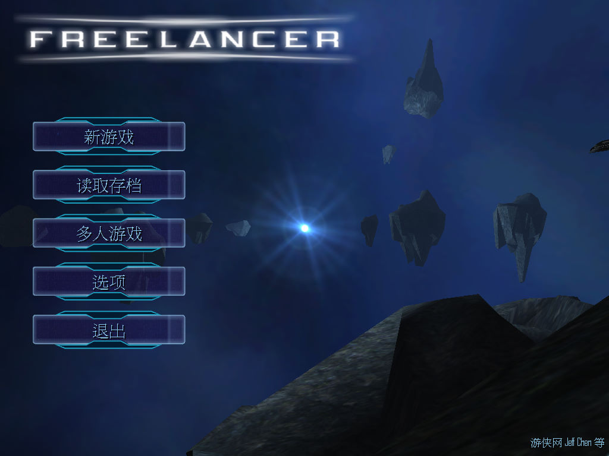
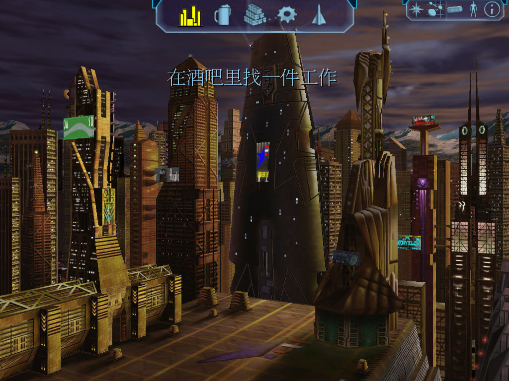

名稱：星際遊俠／自由槍騎兵 (Freelancer，簡中／英文版)
簡介：Digital Anvil 2003年出品的太空戰鬥冒險與經營模擬遊戲，兼具部份角色扮演元素，
由Microsoft代理發行。由於遊戲並未提供字幕選項，因此對於英文聽力不好的玩家，
可能會聽不懂過場動畫裡的劇情 [待補]。


保護：光碟SafeDisc 2.7
檔案：flpatch.rar = 英文1.1更新檔
nocd.rar = 免光碟檔（1.0/1.1通用）
Freelancercn2.rar = 1.1簡中漢化檔